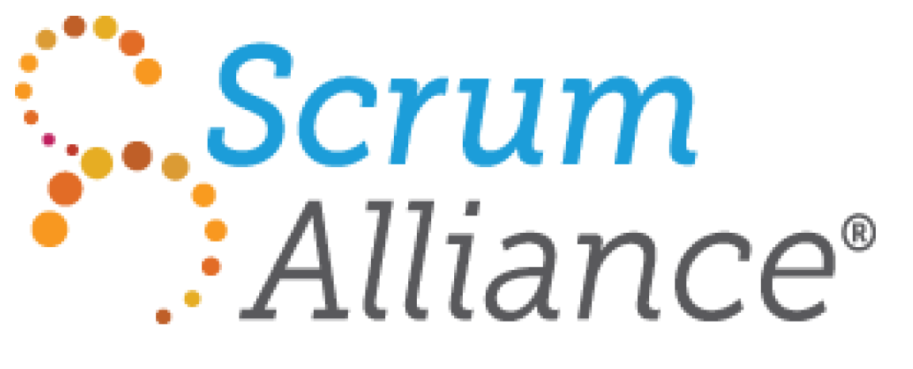

Although I have held many different roles and had a variety of responsibilities throughout my career, my commitment to lifelong learning and my advocacy for the use of technology has never ceased. From the moment I graduated from my bachelor's degree program through the present, I have sought to learn more about technology, use technology to inform others, and teach about the proper use of technology. After graduating with a degree in marketing in 2013, I began working at an online retailer working on website projects. In this role I spent a portion of my time receiving training on the content management system used to populate and manage the shopping site. Along with this, I trained in new employees on internal company technologies and tools.
In my next position, my passion for technology grew and my educational skills were honed. I began working as a project manager at a company that sold a meeting room booking app to other organizations. The two types of projects I worked on truly exemplified my split passions of education and technology. From the technology side, I spearheaded website development projects for the company’s commercial website. Regarding education, I also directed implementation projects for new customers and taught their employees how to use our software. The training included pre-recorded video demonstrations where I first utilized technology to truly enhance my instructional capabilities.
From there, I pivoted to technology hardware and worked for an organization that sold in a tiered distribution model. This meant that our customers were sales organizations across the globe that provided their customers with our products along with complimentary services. In this role I again had a dual focus of technology and education. I trained our customers’ sales staff on the benefits and technical components of our hardware and worked with partners to manage intranet and commercial microsites for our products.
My next place of employment provided me with the opportunity for the direct intersection of my two passions of education and technology. I began working at another application development company that sold their proprietary software to other organizations. In this role I taught end users how to use the application and consulted on best practices for technology management with customers. I even went so far as to design a new product for the organization that was sold to current customers. It was at this time that I recognized my desire to further my education and dive deeper into learning technologies. I began taking courses in the Master of Science of Learning Technology and Design Program part time.
The Present
My current role is a slight shift of my dual passions of technology and education. I work as a Scrum Master for an application development team. This provides me with the opportunity to teach and guide my team on the best practices regarding Agile and Scrum methodologies. As I get closer to graduation, I realize how much of my career was shaped by education and technology and I hope to continue with my passion for both endeavors.